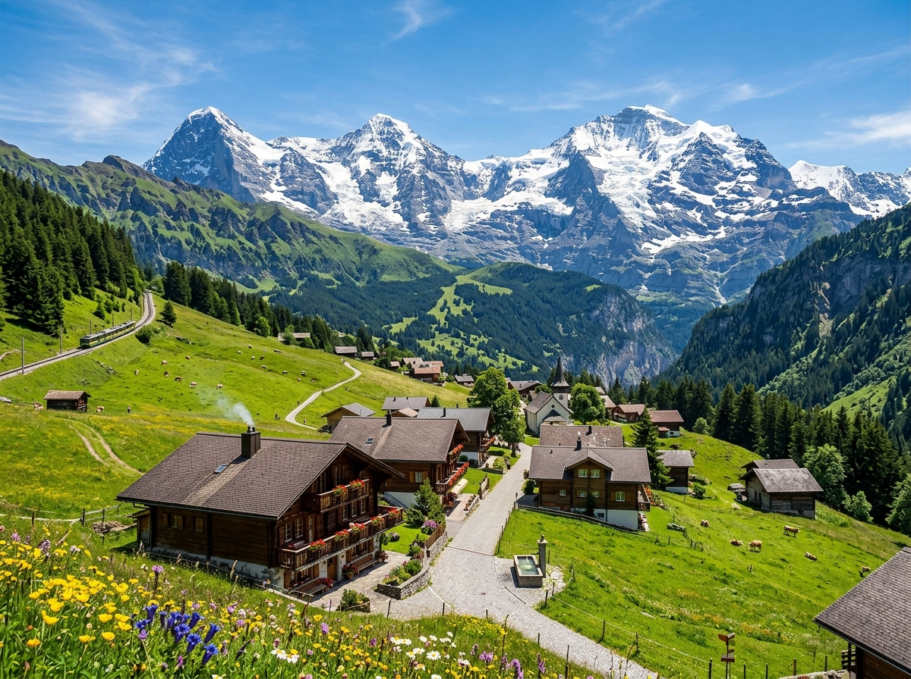
Hier stehen die wichtigsten Daten zu deinem Land. In der App baust du daraus deinen eigenen Steckbrief.
| Hauptstadt | Bern |
| Kontinent | Europa |
| Sprache | vier Amtssprachen: Deutsch, Französisch, Italienisch und Rätoromanisch |
| Währung | Schweizer Franken |
| Einwohner | rund 8,9 Millionen Menschen |
| Fläche | etwa 41.000 km², ungefähr halb so groß wie Bayern |
| Großer Berg | der höchste Berg heißt Dufourspitze und ist 4.634 Meter hoch. Das berühmteste Wahrzeichen ist das Matterhorn mit seiner spitzen Form. |
| Nachbarländer | Deutschland, Frankreich, Italien, Österreich und Liechtenstein |
In der Schweiz gibt es viele berühmte Orte. Diese vier solltest du kennen.
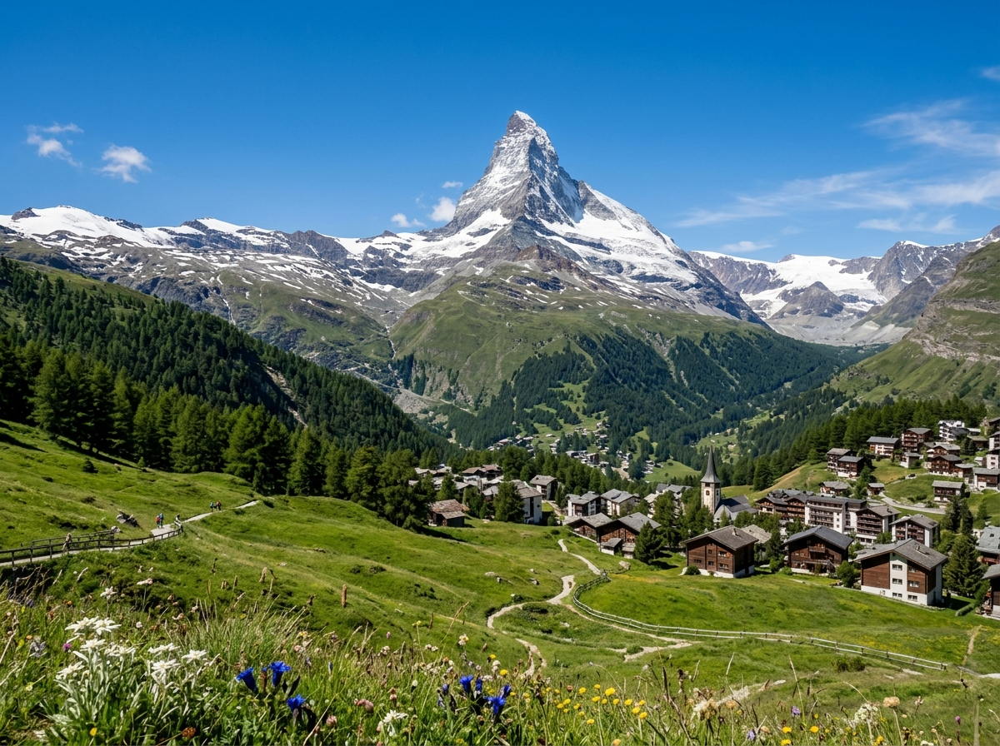
MatterhornDas Matterhorn ist der bekannteste Berg der Schweiz. Es hat eine spitze Form wie ein Zahn und ist 4.478 Meter hoch. Viele Bergsteiger wollen ganz nach oben klettern. Das Matterhorn steht beim Dorf Zermatt.
Grüne Wörter für die AppBergspitze Form4478 MeterBergsteigerZermatt
RheinfallDer Rheinfall ist der größte Wasserfall in Europa. Das Wasser stürzt laut und tosend in die Tiefe. Mit einem Boot kommt man ganz nah heran. Der Rheinfall liegt bei der Stadt Schaffhausen.
Grüne Wörter für die AppWasserfallgrößter in EuropaBootSchaffhausentosend
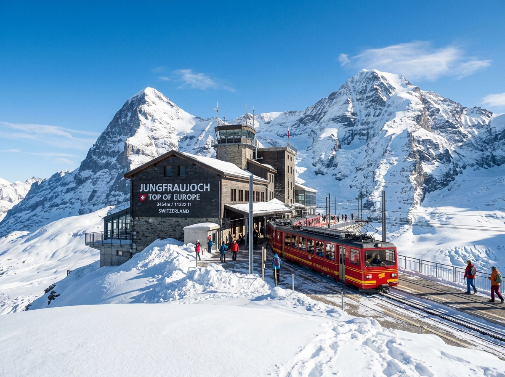
JungfraujochDas Jungfraujoch ist eine Bergstation hoch oben in den Alpen. Mit einer Zahnradbahn fährt man fast 3.500 Meter nach oben. Dort liegt das ganze Jahr Schnee. Man nennt den Ort auch „Top of Europe".
Grüne Wörter für die AppBergstationZahnradbahn3500 MeterSchneeAlpen
GenferseeDer Genfersee ist ein großer See im Westen der Schweiz. An seinem Ufer steht das alte Schloss Chillon, das aussieht wie aus einem Ritterfilm. In Genf gibt es eine riesige Wasserfontäne, die hoch in die Luft spritzt.
Grüne Wörter für die Appgroßer SeeSchloss ChillonBurgWasserfontäneGenf
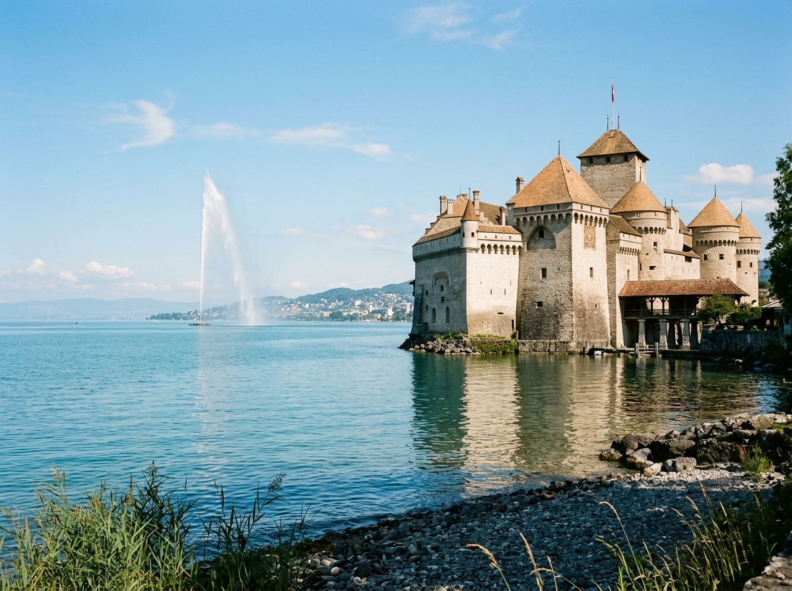
In den Schweizer Alpen und Bergen leben Tiere, die man bei uns selten zu sehen bekommt.
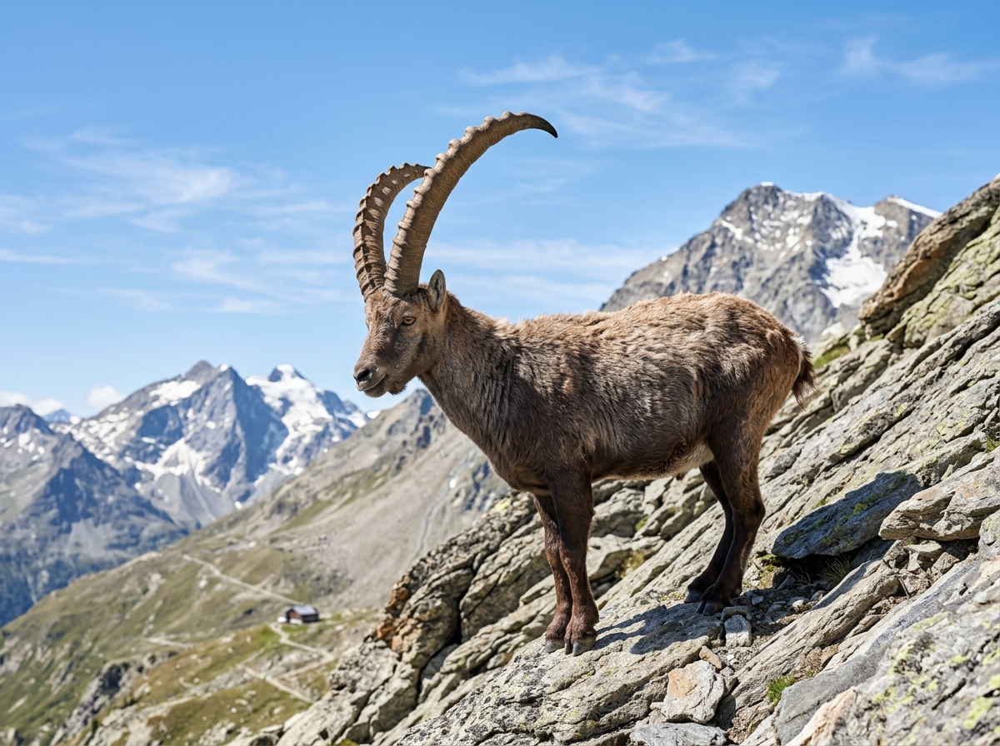
SteinbockDer Steinbock ist ein wildes Tier in den Schweizer Alpen. Er hat große, gebogene Hörner. Mit seinen Hufen klettert er sicher auf steile Felsen. Der Steinbock ist ein Zeichen für die Berge.
Grüne Wörter für die AppAlpengebogene Hörnerklettertsteile Felsenwild
MurmeltierDas Murmeltier ist ein kleines, kuscheliges Tier und lebt in den Bergen. Es wohnt in einem Bau unter der Erde. Im Winter hält es einen langen Winterschlaf. Bei Gefahr pfeift es laut zur Warnung.
Grüne Wörter für die Applebt in den BergenBau unter der ErdeWinterschlafpfeiftklein
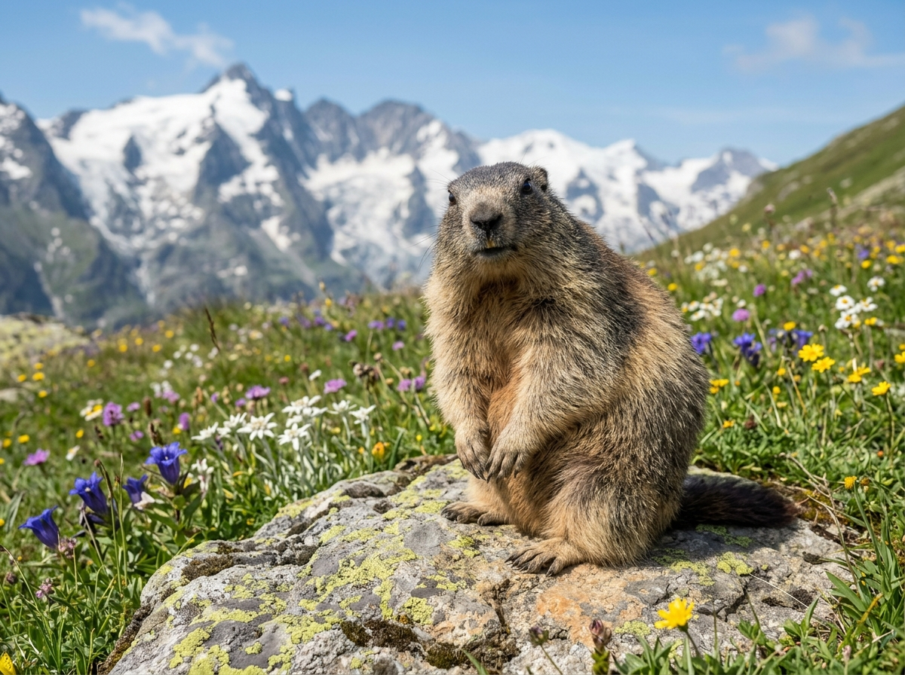
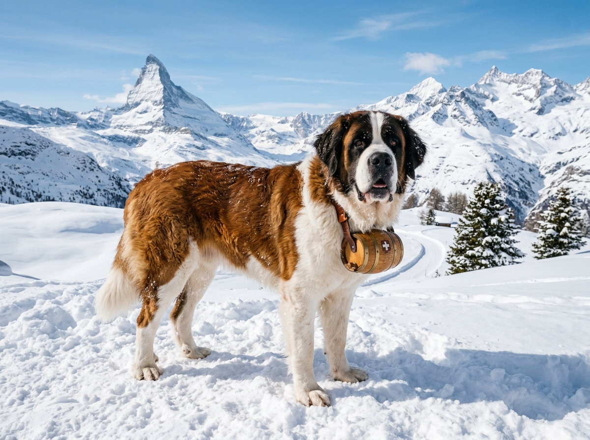
BernhardinerDer Bernhardiner ist ein sehr großer Hund aus der Schweiz. Früher half er Mönchen, Menschen im tiefen Schnee zu finden. Er ist stark und freundlich. Bekannt ist er durch das kleine Fässchen am Halsband.
Grüne Wörter für die Appgroßer Hundhilft im SchneeMöncheFässchenstark
In der App kannst du beim Essen das Foto nehmen oder dein Gericht selbst malen.
KäsefondueBeim Käsefondue wird Käse in einem Topf geschmolzen. Man tunkt Brotstücke an einer langen Gabel hinein. Gegessen wird es gern im Winter mit der ganzen Familie. Das Käsefondue ist ein typisches Schweizer Gericht.
Grüne Wörter für die Appgeschmolzener KäseTopfBrotstückelange GabelWinter
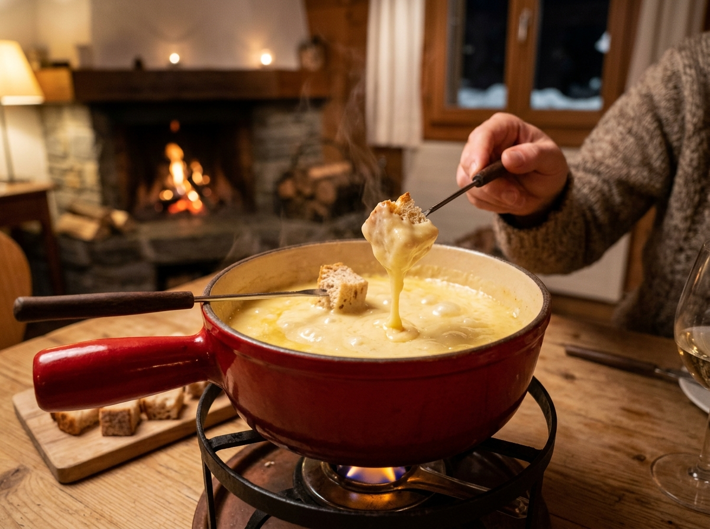
RöstiRösti ist ein gebratener Kuchen aus Kartoffeln. Außen ist er knusprig und innen weich. Man brät ihn in der Pfanne. In der ganzen Schweiz ist Rösti sehr beliebt.
Grüne Wörter für die AppKartoffelngebratenknusprigPfannebeliebt
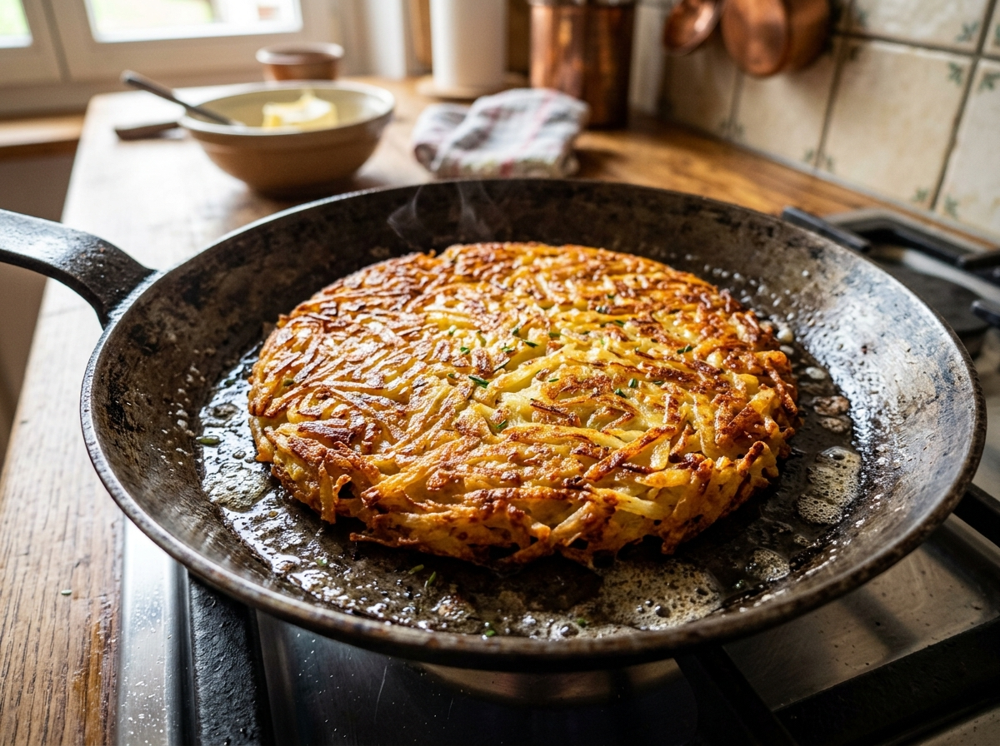
Schweizer SchokoladeDie Schweiz ist auf der ganzen Welt für ihre Schokolade bekannt. Sie schmeckt süß und cremig. Marken wie Lindt und Toblerone kommen von dort. Viele Menschen lieben Schweizer Schokolade.
Grüne Wörter für die AppSchokoladecremigLindtTobleroneweltbekannt
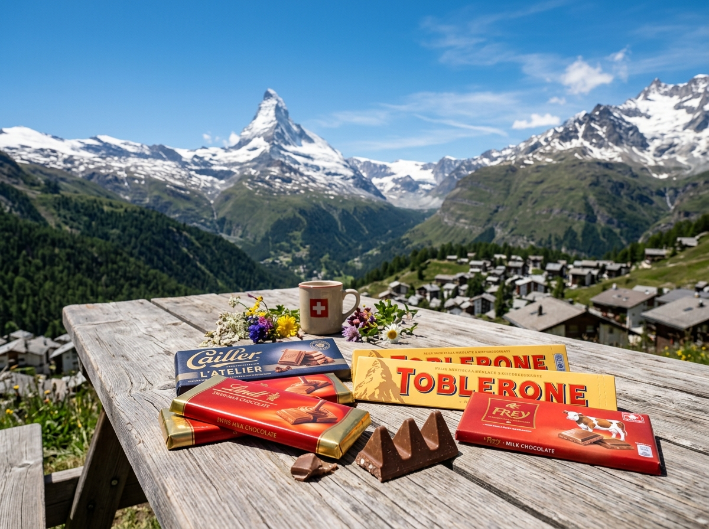
⚽ Gut zu wissen
Die Fußball-Nationalmannschaft der Schweiz hat den Spitznamen „Nati". Sie spielt im roten Trikot mit dem weißen Kreuz. Bei der WM 2026 ist die Schweiz dabei und spielt in der Gruppe B gegen Katar, Bosnien und Kanada. Die Nati gehört zu den starken Teams in Europa und kam schon oft ins Achtelfinale.
Grüne Wörter für die AppNatirotes Trikotweißes KreuzWM 2026Gruppe B
🌟 Profi-Wissen
Granit Xhaka ist ein bekannter Schweizer Fußballer. Er spielt beim deutschen Verein Bayer Leverkusen. Xhaka ist bekannt für seinen harten Schuss. Bei der WM 2022 kam die Schweiz ins Achtelfinale. Yann Sommer ist der bekannte Schweizer Torwart.
Grüne Wörter für die AppGranit XhakaBayer Leverkusenharter SchussWM 2022 AchtelfinaleYann Sommer
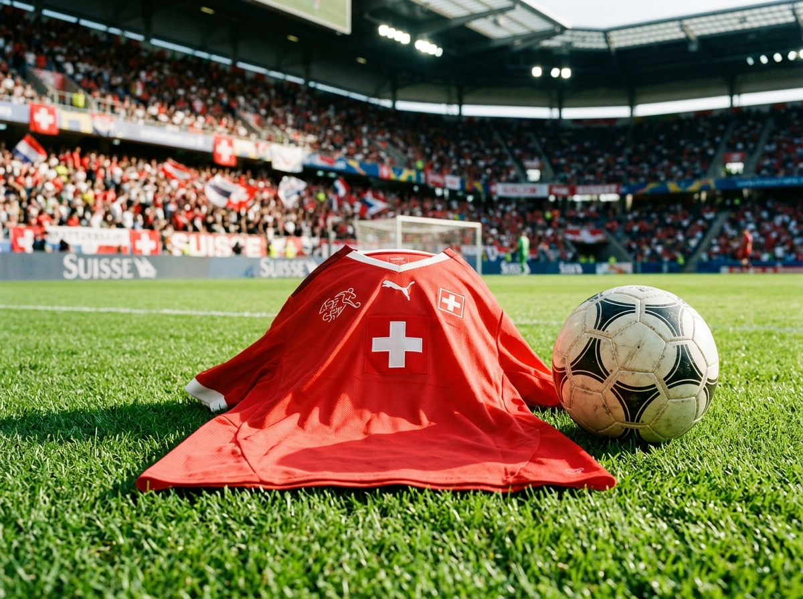
Schule in der SchweizIn der Schweiz gehen die Kinder von Montag bis Freitag zur Schule, so wie bei uns in Bayern. Viele Kinder sprechen zu Hause Schweizerdeutsch, lernen in der Schule aber auch Hochdeutsch. In manchen Teilen des Landes wird der Unterricht auf Französisch oder Italienisch gehalten. So lernen viele Kinder schon früh mehrere Sprachen.
Grüne Wörter für die AppMontag bis FreitagSchweizerdeutschHochdeutschFranzösischmehrere Sprachen
Leben in den BergenViele Kinder in der Schweiz wohnen in der Nähe der Berge. Im Winter fahren sie oft Ski oder rodeln im Schnee. Im Sommer wandern die Familien auf Bergwegen und sehen Kühe auf den Wiesen. Die Kühe tragen große Glocken um den Hals, die man weit hören kann.
Grüne Wörter für die AppBergeSki fahrenSchneewandernKühe
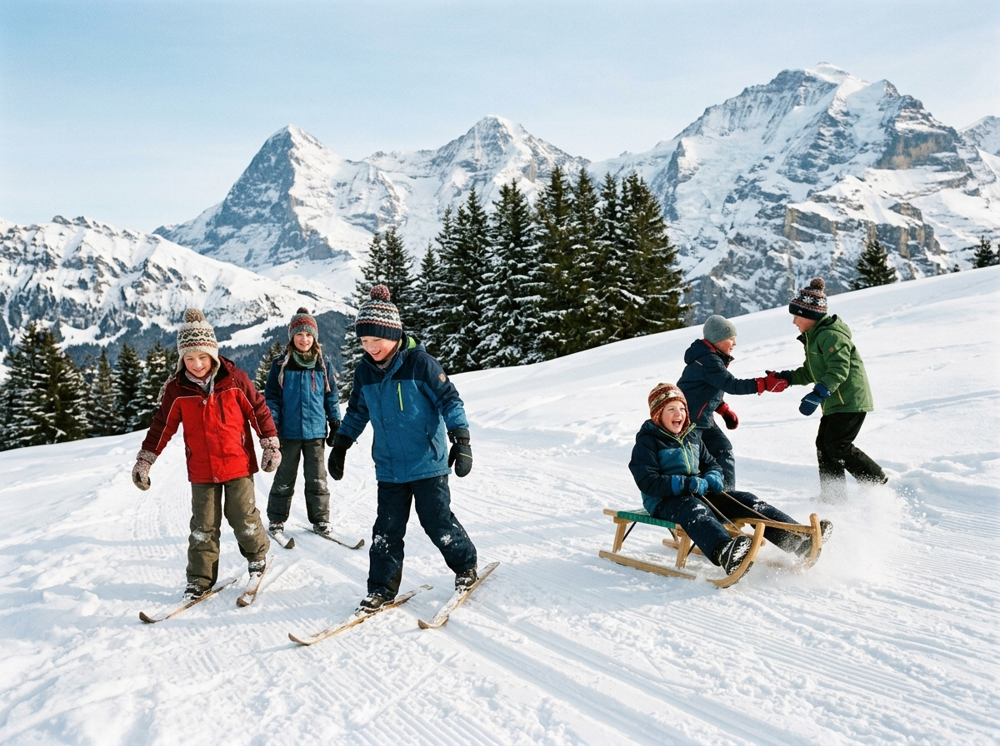